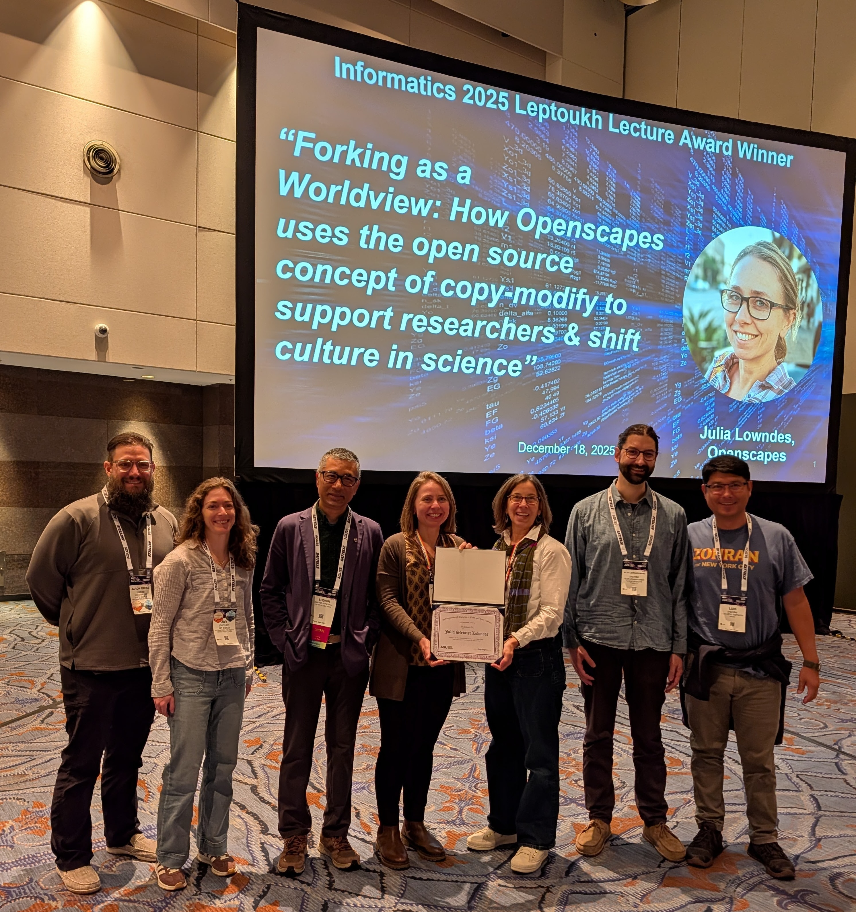

Receiving the Dr. Greg Leptoukh Award lecture at AGU
Julie Lowndes ![]()
At the AGU 2025 Fall Meeting I received the AGU Greg Leptoukh Lecture Award. This award celebrates the life of an inspiring Earth scientist in our community and recognizes significant contributions to informatics, computational, or data sciences through research, education, and related activities. Receiving this award is a huge honor. I have worked hard and am proud of what I have done for science, scientists, and people supporting science. And I greatly value my many collaborators who work closely with me; we are receiving this award together. I know this award reflects all our work, as well as me, and it’s really special to be called out.
The blog shares a quick overview of my lecture. It focuses on the official citation for my award written by NASA Openscapes Mentors Aaron Friesz (now at ESIP), Amy Steiker, Luis Lopez, plus Allison Horst, and my official response. I will give the lecture again online in early 2026 – we will share details when we know – and we will update this post with a recording.
Quicklinks:
- Slides - ”Forking as a Worldview”: How Openscapes uses the open source concept of copy-modify to support researchers & shift culture in science
- https://www.agu.org/honors/leptoukh
- https://www.agu.org/honors/leptoukh/past-recipients
Cross-posted at openscapes.org/blog, nmfs-openscapes.github.io/blog, nasa-openscapes.github.io/news.
In December 2025 in New Orleans, as part of the Greg Leptoukh Lecture Award I gave a 75-minute invited lecture: ”Forking as a Worldview: How Openscapes uses the open source concept of copy-modify to support researchers & shift culture in science”. Openscapes Mentors were sitting in the front row, boosting my courage and sharing my joy.
I co-authored the talk with the Openscapes Core Team: Stefanie Butland, Andy Teucher, Melanie Burgess, Stephanie Amend, Ileana Fenwick, Liz Neeley. We told more stories and practices of our team – the unseen infrastructure that enables us to have outsized impact, and continually expand possibilities with our collaborators.

The talk’s structure (forked from my documenting things talk at Posit Conf 2023):
Forking mindset - forking (v) means to copy and modify. We fork code, and also ideas, structures, agendas, documentation, programs…
What’s possible from this + how we work - stories of how forking has made it possible for NOAA scientists to develop collaborative workflows for data-intensive science; how forking has made it possible for NASA data center staff to revolutionize Earthdata workflows in the Cloud; and how forking has made it possible for Openscapes to be sustainable. This was my first time talking more about how I shifted from academic scientist to small business owner and growing the team to support the work we do.
Meeting the moment together - it’s been a hard, disappointing year. And yet. We can all continue to work together, create our own certainty, default to open. The (Hidden) social infrastructure that drives this is scaled with trust and kindness.
Official AGU Citation - Greg Leptoukh Lecture Award
Note: this citation and response will be posted on Julie’s AGU profile in the coming months.
Dr. Julia Stewart Lowndes is transforming environmental and Earth science through her visionary leadership in open, collaborative, and inclusive data science. She has redefined how scientific teams work together—empowering researchers to do better science in less time, together—and inspiring a movement toward more effective, inclusive, and reproducible Research.
Trained as a marine scientist with a Ph.D. from Stanford University, and later as a scientist at the National Center for Ecological Analysis and Synthesis (NCEAS), Dr. Lowndes gained key insights into the challenges faced by solo scientists when working with big data. Her 2017 paper in Nature Ecology and Evolution, “Our path to better science in less time using open data science tools,” (Lowndes et al. 2017) articulated a compelling vision for modernizing scientific workflows. By addressing both the technical and human challenges of data science, her work has catalyzed cultural change across government agencies, academic institutions, and research networks.
In 2018, Dr. Lowndes founded Openscapes, a pioneering program that mentors individuals and research teams in open, reproducible, and collaborative science. Through initiatives such as NASA Openscapes, she has reshaped how NASA data centers and researchers collaborate—accelerating cloud migration, strengthening interdisciplinary connections, and fostering psychological safety within teams. Openscapes’ work with NOAA, NASA, and EPA has advanced the culture of open science across the federal research landscape and was featured in the White House’s 2024 Year of Open Science fact sheet for its exemplary mentorship with NOAA Fisheries.
Dr. Lowndes is also a dedicated advocate for equity and inclusion in data science. She co- founded R-Ladies Santa Barbara and advises the Pathways to Open Science program supporting Black environmental and marine researchers. Her efforts have built welcoming communities that empower those historically excluded from technical fields to lead in open Science.
Dr. Lowndes exemplifies the spirit of the Greg Leptoukh Lecture, which honors innovations in informatics that enable scientific discovery. Like Greg Leptoukh, she recognizes that progress in science depends not only on technical excellence but also on collaboration, transparency, and community. Her leadership has created a more inclusive, efficient, and hopeful model for how science is done—making her a profoundly deserving recipient of this honor.
Aaron Friesz, Earth Science Information Partners (ESIP)
NASA Openscapes Mentors and Allison Horst
Julia’s Response - Greg Leptoukh Lecture Award
It is an absolute honor to receive the Greg Leptoukh Lecture award recognizing innovations in computational and data informatics that enable scientific discovery. I feel an intense upwelling of love and gratitude for my colleagues that is difficult to describe. It is a privilege to feel such joy about one’s colleagues. And yet, it is quite a common trait of our greater open science community that reflects the deep value of collaboration through trust, empathy, and kindness.
I created Openscapes to be a feeling of welcome and empowerment around data-intensive science, having felt this myself as a marine ecologist welcomed and empowered by the R open source programming community. Since 2018 we’ve been directly mentoring nearly one thousand researchers and people supporting research, while co-creating mechanisms together so we can all turn around and support countless others within our work-lives. We continue to learn from, with, and for each other, every effort turning our Flywheel (Robinson and Lowndes 2022). We reuse and “fork” what works in new places, using a concept from software engineering for reuse and credit. Openscapes now means more to people than I can possibly define. Its impacts are impossible to quantify, as so many “n of 1” individuals make a whole wave of change in a different place, and in a way that is specific and empathetic to that place. This is movement building. The connections and innovations across interleaving communities and what it means for science and society is beautiful.
My nomination for the Leptoukh Lecture is one example. My dear colleagues Amy Steiker and Luis Lopez of NSIDC (National Snow and Ice Data Center) – representing the NASA Openscapes Mentors co-creating and teaching common tutorials to support researchers as they migrate analytical workflows to the Cloud – collaborated even as Aaron Friesz moved on to a new job at ESIP, where he supports the data community in new ways. And they included Allison Horst, a data scientist, teacher, and longtime collaborator who developed all Openscapes art, but who they had not yet met. They forked their systems for co-development and drew from our open community networks for a new purpose, just as we do when we build other social and technical infrastructure for science.
We’ve got more work to do. As Johnson & Wilkinson write in “All We Can Save” continue to drive us: “We” speaks to the collective, to collaboration, to community, to the relational work at hand. Addressing the climate crisis…will take everyone. We cannot, we must not, go it alone.”
Dr. Julia Stewart Lowndes
Openscapes
Founding director
References
Citation
@online{lowndes2026,
author = {Lowndes, Julie},
title = {Receiving the {Dr.} {Greg} {Leptoukh} {Award} Lecture at
{AGU}},
date = {2026-01-15},
url = {https://nasa-openscapes.github.io/news/2026-01-15-agu-leptoukh-award-julie-lowndes},
langid = {en}
}